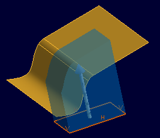
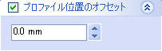
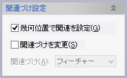
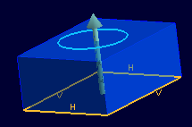

押し出しフィーチャー
押し出しフィーチャー
プロファイル形状を一定方向に押し出したソリッドを作成します。


操作方法
パラメータの入力が整うと作成形状のプレビューと押し出し方向を示す矢印が表示されます。形状の確認後、OKボタンで実行します。
 矢印はマウスでドラッグして押し出し量を変更することができます。
矢印はマウスでドラッグして押し出し量を変更することができます。
パラメータ
- プロファイル
- 高さ
押し出す量と方法(順方向、反対方向、両方向、２方向）を指定します。


押し出し量は長さ指定のほか"サーフェイスまで"と"点まで"で指定することができます。


- 方向指定（オプション）

押し出し方向を指定します。(方向入力)
スケッチを押し出す場合、方向を指定しなければ平面の法線方向に押し出します。
サーフェイスを押し出す場合は必ず方向の指定が必要です。 - 勾配（オプション）


押し出し方向に勾配をつけます。両方向、2方向に押し出す場合は両方向それぞれに勾配を指定できます。 - 厚みづけ（オプション）


プロファイルを厚みづけして押し出します。
厚みづけの量と基準(内側、外側、両側、２方向)を指定します。オフセットを指定してプロファイルをオフセットした位置で厚みづけることもできます。 - プロファイル位置のオフセット（オプション）

プロファイルの位置を押し出し方向に指定量オフセットします。(-は反対方向にオフセットされます。) - 関連づけ設定（オプション）

- 幾何位置で関連を設定
押し出し形状の各面に対してスケッチなどを作成した際の関連づけ方法を設定します。
設定すると幾何位置に対して関連を設定します。
設定しない場合は押し出し方向や、厚みづけ方向に対して関連づけます。例) 押し出し形状の上面にスケッチを作成

押し出しを編集して押し出し方向を反転した場合のスケッチの位置の追従方法の違い
設定しない場合(押し出し方向の先に追従)
幾何位置で設定した場合(変更前の押し出し方向側に追従)
- 関連づけを変更
チェックすると、押し出し量や押し出し方向を指定するために選択した要素との関連づけを変更できます。既定値は「フィーチャー」です。
- 幾何位置で関連を設定